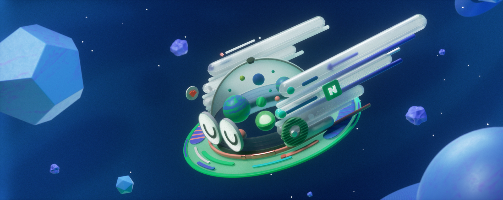

네이버로고
건강한 지구를 위해
네이버가 Green 계획을 소개합니다.
네이버가 Green 계획을 소개합니다.
디지털 친환경부터 지구를 위한 가장 쉽고 착한 소비까지
네이버의 기술력과 파트너와의 공동 노력으로 친환경 생태계를 확대해 나가고 있습니다.
네이버 1784에서
우리는 혁신을 현실로 만들고 있습니다.
우리는 혁신을 현실로 만들고 있습니다.
네이버의 다양한 기술들로 실험과 도전, 융햡을 통해
새로운 기회와 가능성을 만들어 갑니다.
사업의 시작부터 성장까지
네이버 SME 풀케어시스템이 함께 합니다.
네이버 SME 풀케어시스템이 함께 합니다.
사업자를 지원하고 응원하는 네이버 시스템이 사장님의 경쟁력이 됩니다.
N개의 엔진이, 하나의 팀처럼!
네이버의 다양하 서비스와 비즈니스를 만듭니다.
네이버의 다양하 서비스와 비즈니스를 만듭니다.
도전과 혁신으로 똘똘 뭉친 TEAM NAVER 인사이드 스토리
TEAM NAVER 에피소드로 만나보세요.
네이버의 뛰어난 동료들과 함께 성장하는 법,
지금 바로 NAVERSHIP에 탑승하세요!
지금 바로 NAVERSHIP에 탑승하세요!
서로 다른 사람들이 모여 네이버의 추진력을 만듭니다.
1현재 슬라이드 페이지
5전체 슬라이드 페이지


